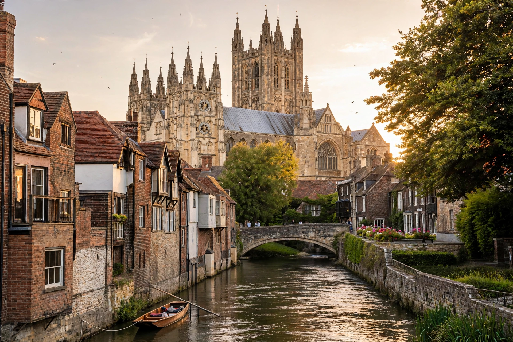

| Canterbury | |
|---|---|
 | |
| County | Kent, England |
| Region | The "Garden of England" |
| Population | ~55,000 (city) |
| Known for | Canterbury Cathedral, seat of the Archbishop of Canterbury |
| UNESCO | World Heritage Site (1988) |
Canterbury is a cathedral city in Kent, in south-east England, lying on the River Stour. It was a major centre of Christianity from 597, when Augustine of Canterbury arrived on a mission from Rome, and it remains the seat of the Archbishop of Canterbury, the senior bishop of the Church of England. In the Middle Ages it became one of Europe's great pilgrimage destinations after the murder of Archbishop Thomas Becket in its cathedral in 1170 — the pilgrimage immortalised in Geoffrey Chaucer's Canterbury Tales.
The settlement began as a Belgic Iron Age oppidum and became the Roman town of Durovernum Cantiacorum. After the Anglo-Saxon settlement it was the capital of the Kingdom of Kent. Augustine founded an abbey outside the walls and a cathedral within them. Becket's murder by knights of Henry II, and the fire and rebuilding of the cathedral choir under William of Sens, made Canterbury a magnet for pilgrims; the shrine was destroyed under Henry VIII in 1538. The city suffered bombing in the Baedeker raids of 1942.
Canterbury Cathedral, St Augustine's Abbey, and St Martin's Church together form a UNESCO World Heritage Site. The largely intact medieval city walls, the Westgate, and the Old Weavers House on the Stour are among the surviving landmarks. The city is home to the University of Kent and Canterbury Christ Church University.